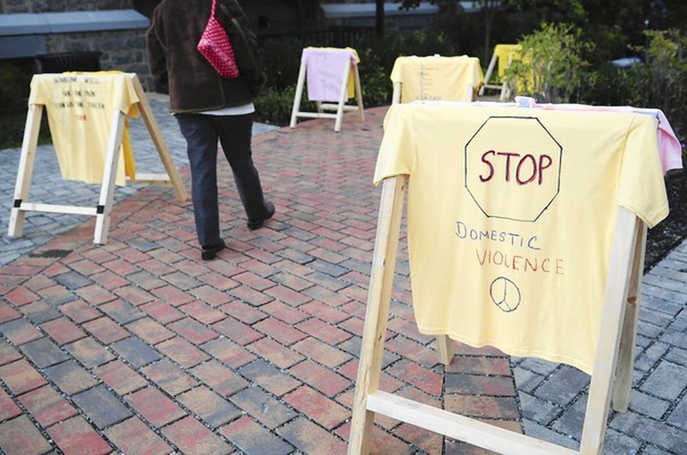

Valerie Weir has seen the toll a year of pandemic stress has taken on families, in her roles as a forensic nurse and domestic violence program coordinator at the Greater Baltimore Medical Center in Towson.
Domestic violence cases have skyrocketed — up nearly one-third in Baltimore City alone — as isolation and financial hardships make it more difficult for survivors to leave their abusers.
“The pandemic really highlighted and exacerbated the issues survivors have dealt with a long time,” she said.
So has the severity of the injuries.
Weir said she and her colleagues have seen more injuries from strangulation and assaults. Patients have suffered brain bleeds and broken orbital bones around the eye, and they have increasingly told her they’ve been threatened with a weapon.
More than a year after the coronavirus outbreak shuttered office buildings and closed or limited public gatherings, Maryland experts, advocates and law enforcement officials are grappling with extended spikes in domestic violence incidents. As people have been forced to work and spend more time at home, cramped and isolated conditions are leaving victims, predominantly women, with little chance to leave or seek protection from abusers, experts said.
Violent domestic crime has risen 31% year over year in the city, from 354 incidents in the first three months of 2020 to 462 in the first three months of this year, according to Baltimore Police Department data.
Among those incidents, domestic aggravated assaults have risen 35%, from 266 to 359 during that period.
“As our department continues to work closely with our partners to connect victims and potential victims to resources, it is vital that we are apprehending those responsible for violent crimes,” Baltimore Police Commissioner Michael Harrison said in a statement.
Baltimore County police did not provide data on cases.
Cases
Cases, such as Wilson's, rise as victims endure the pandemic. Source: National Gun Violence Memorial
The city’s first homicide of the year was domestic, according to police. Investigators charged Lakeyria Doughty, 26, a dirt biker known as “Wheelie Queen” and featured in the HBO movie “Charm City Kings,” with fatally stabbing her partner, 33-year-old Tiffany Wilson on New Year’s Day.
Doughty’s attorney said at a January court hearing that her client didn’t kill Wilson but tried to save her life by performing CPR and calling for help.
Advocates for domestic violence victims expressed concerns when the pandemic began a year ago that cases would rise as families became isolated during lockdown orders.
Many families faced further isolation as more companies told employees to work from home, or because of furloughs and layoffs.
Advocates also worried about child victims who no longer attended school in person. The pandemic has taken a financial strain, leaving many struggling to pay for basic needs, which can increase the chances for abuse.
A national study has found that domestic violence cases rose 8.1% after pandemic-related lockdown orders were issued.
Janice Miller is the director of Survivor Engagement and Stability Services at the House of Ruth Maryland, which provide services to survivors. She said its hotline received about 25 calls a day from survivors in need of assistance between March and October, which is a nearly 20% increase compared with before the pandemic. Miller noted that many who call the hotline do not contact law enforcement.
Additionally, the number of people at the House of Ruth’s shelter for survivors and their children increased about 11%.
“The ability to support oneself and one’s safety are very intertwined,” she said, adding that many more people were seeking not only safety from abuse, but help with basic needs, including rental and utility assistance, and food. Staff had heard from survivors whose abusers have taken their stimulus check, or withheld food if resources were scarce.
“The pandemic really highlighted and exacerbated the issues survivors have dealt with a long time,” she said. “We adapted very early on to provide some of those basic needs.”
Amanda Rodriguez, executive director of the nonprofit TurnAround, based in Towson, said cases peaked last year but remain high. The worst period was October, she said, when TurnAround received about 800 calls, up from 98 in October 2019.
Many people also seek recovery from programs like TurnAround. Source: CBS Baltimore
Rodriguez said the volume of work is not just from an increase in those experiencing violence. Many people reach out looking for financial help as part of additional safety planning before leaving an abusive partner. Other clients, she said, are having difficulty coping after past abuse.
“There is a real strain on parents, on individuals, where we are just having to cope with a lot more,” and face more anxiety, Rodriguez said. “We have seen a lot of clients come back,” because they’re dealing with past trauma that reemerges amid stress brought about by the pandemic, she said.
Rodriguez said TurnAround has also seen in increase in young abuse survivors, with the youngest client just 13 years old. She attributed that trend to more referrals coming from social services rather than law enforcement.
At GBMC, Weir said, clients come to their center from hospitals or from the community. GBMC staff will screen all patients for potential abuse, ranging from those treated in the ER or those who come to the hospital to give birth.
Many clients have never before disclosed abuse to anyone. Some aren’t ready to take action, but need help making an exit plan, she said, while others might be ready to seek shelter.
“Many people tried to endure,” during the pandemic, Weir said.
The number of pregnant and postpartum women suffering abuse has also increased during the pandemic. It hadn’t been uncommon for first-time abuse to begin during a pregnancy because of the added stress a new baby presents to couples, Weir said. Those stresses have only accelerated in the past year, and Weir said that has led to more cases of abuse among pregnant and postpartum women.

“Many people tried to endure,” during the pandemic, Weir said. Source: Baltimore Sun
Pregnancy and postpartum clients increased threefold in 2020 over the previous year, Weir said.
Beginning Thursday, GBMC will host an annual “Walk a Mile in Their Shoes” fundraiser to help cover costs for the domestic violence program. The event, like so many this year, will be held virtually.
Weir said she hopes it will also spread awareness because abuse is often a taboo topic, and she wants those who are abused to realize they can get the help they need.
Turn Around’s 24-hour hotline is 443-279-0379. GBMC’s hotline is 443-849-3323. The House of Ruth Maryland’s hotline is 410-889-7884.